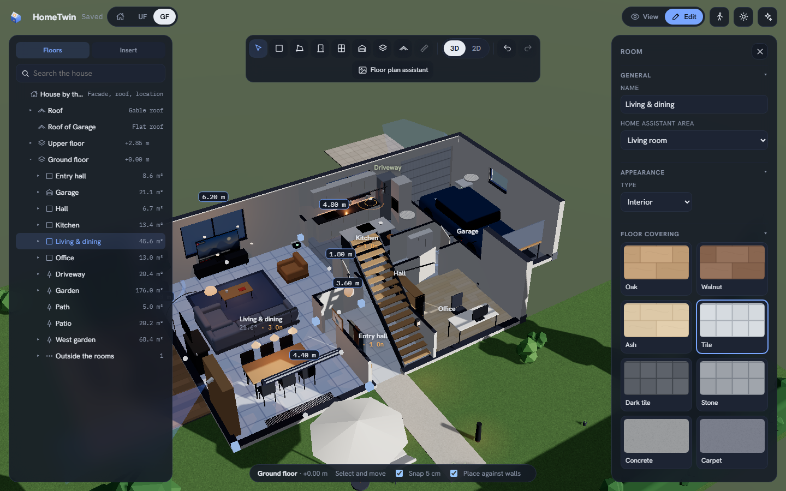
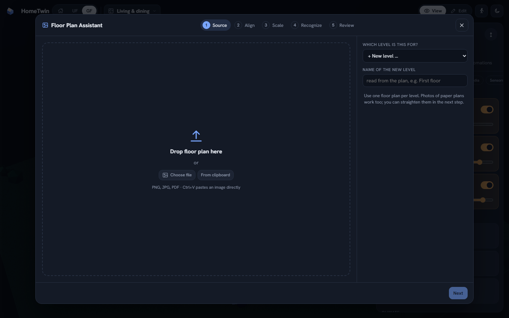
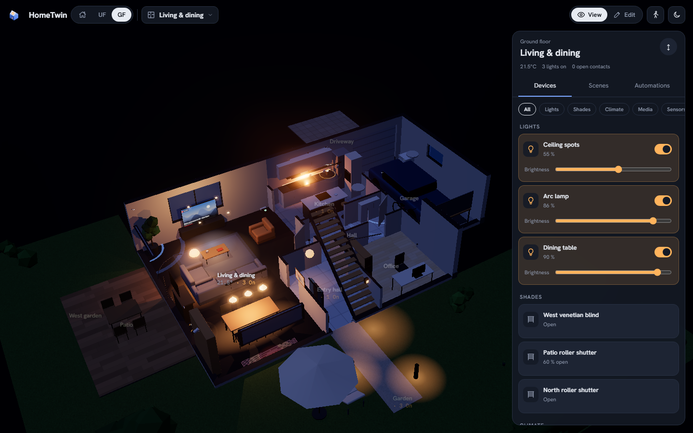
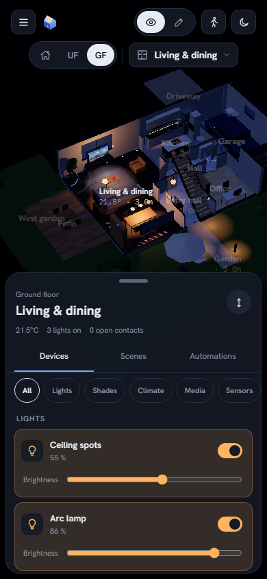
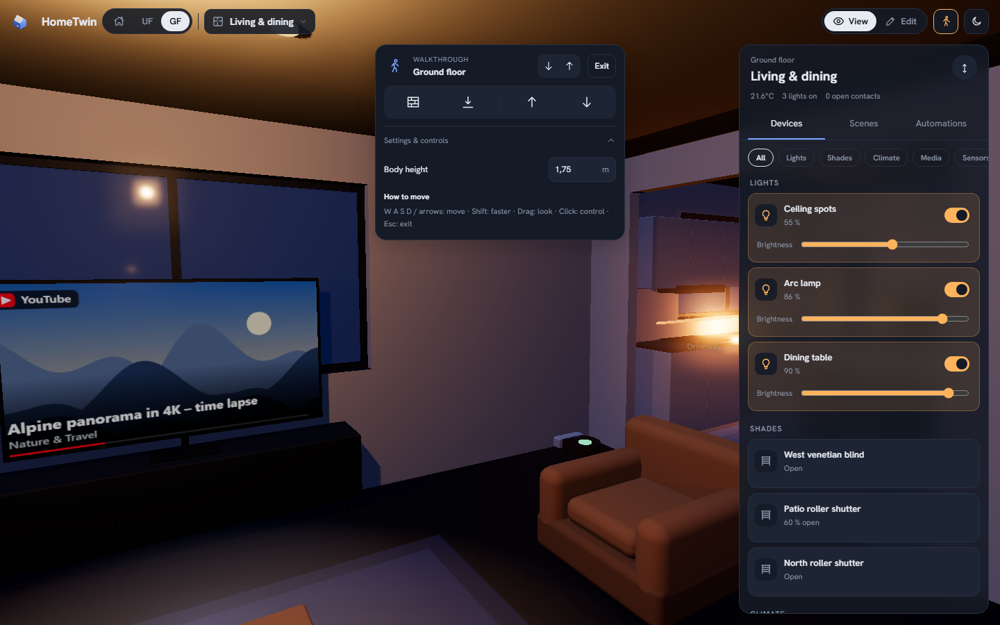
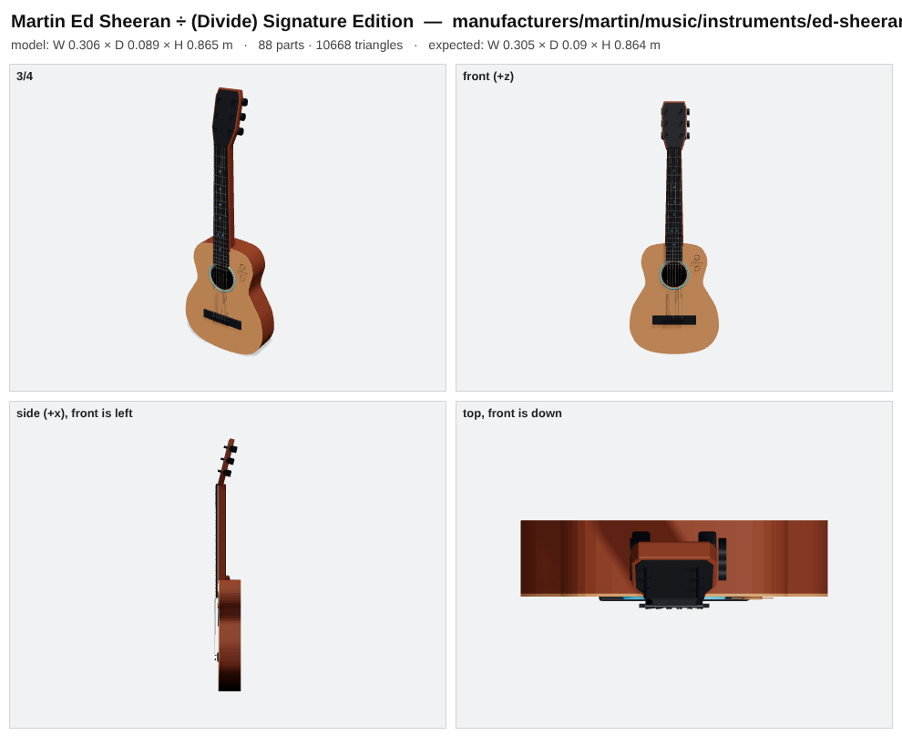

HOME ASSISTANT, IN A NEW DIMENSION
Your home in 3D.
One integration.
A community that builds with you.
HomeTwin is a community-driven, open-source 3D dashboard for Home Assistant. Build and review your plan in the visual editor, optionally let AI read a floor plan, and control devices where they belong.
Free & open source · Public beta
Preparing your demo home…
Go ahead. Turn off a light.Click a lamp. Drag to look around.
From floor plan to living 3D home
The idea of a 3D home dashboard isn’t new. The head start is. AI takes on the painstaking first pass, so you can review and refine instead of rebuilding every room by hand.
📐 Upload your floor plan
Image, PDF, photo or paste from the clipboard. Draw a room yourself if you prefer.
🤖 AI reads the rooms
Walls, rooms, doors, windows and dimensions are read from the plan and checked against the printed m².
🏠 Control it in 3D
Rooms map to your Home Assistant areas. Place lights, blinds, sensors and cameras — and use them.
A home you recognise.
Devices you can reach.
A dashboard that feels like your home, not like a spreadsheet of switches.
Live devices
Lights glow in their colour, blinds and garage doors move, windows show when they're open. Tap to toggle, long-press for details.
Real sun & shadows
Sun position from your location and time, including PV panels that light up with your solar output.
Roofs, storeys, garden
Gable, hip or flat roofs, several roofs for garage, carport or garden house, dormers and roof windows.
Walk through connected floors
Use linked stairs, move up or down, and optionally enable wall collision and gravity while the complete house stays around you.
Rooms at a glance
A responsive room picker keeps icons and live status in the top area, with room controls that fit phones, tablets and wall panels.
Personal floor materials
Choose from eight procedural materials and adjust colour, direction, plank or tile dimensions. Generated previews and bundled recipes work offline.
Growing object library
Furniture, doors and windows are modelled from real dimensions by the community and updated live.
A visual editor
Review every AI suggestion or draw by hand. The contribution skill separately helps the community add objects, openings and floor materials.
What’s new
Read concise release highlights in English or German directly in HomeTwin.

Your floor plan does
the heavy lifting.
In our own test, a real architect's plan with 12 rooms was read in about two minutes — rooms, doors and windows, with the scale taken from the printed dimension chains. Review the scale and dimensions before you continue; you can set the scale manually when the plan needs it.
- Dimension chains set the scale automatically
- Second pass: the AI checks its own result on an overlay
- Review step with area warnings, drag corners, add doors & windows by click
- Storeys, stairs and roof in one guided flow — then the walls rise


Pick a room, see everything in it
Choose a room from the responsive top area and see its storey, icons and live status at a glance. Scenes, temperatures, open windows and solar output stay close at hand.


Built by the community
Every object is a small recipe of shapes with real dimensions. New objects appear here — and in your HomeTwin panel — as soon as they are merged.
Missing your object? Contribute it.
Loading library …
Got some tokens to spare?
Put them to work for the community. Look around your home: what furniture or devices are missing from HomeTwin? Grab some product photos and use our contribution guide with Opus 5.5 or a comparably capable model. Bring a whole room’s collection if you like. Let’s make HomeTwin better together.
Contributing an object doesn't need 3D skills. Give your coding agent — Claude, Codex or any agent that supports skills — the file skills/add-object/SKILL.md and a product name or photo. It researches the dimensions, models the object, renders a preview, asks you to confirm and opens the pull request.
Maintained extension points
- Furniture, decor and physical products: declarative object-library recipes; non-opening recipes are inserted as visual library objects.
- Home Assistant device visuals: built-in entity-linked representations live in the frontend source and require an integration update.
- Doors and windows: declarative library recipes for the supported fixed-window and single-swinging-door opening contract.
- Floor materials: declarative, procedural surface presets with no downloaded textures; additions are bundled with an integration update.
- Translations: frontend, integration and runtime strings; a native speaker must review every string and the running UI before merge.
The HomeTwin contribution skill routes each type to its files, checks and review requirements. It extends HomeTwin; the floor-plan assistant inside the integration is the separate tool for building and reviewing your own plan.
- One photo → a Martin Ed Sheeran ÷ guitar with 20 frets at their real positions, inlays and rosette — in about 5 minutes
- Look around your home: what's missing in the gallery? Your sofa, lamp, fridge, wallbox?
- Bring a collection: bundle the furniture and devices from a room in one pull request

No subscription.
Just your home.
HomeTwin is a community project built for people who want their home to feel like their home—even on a screen.
The code is free under MIT. Optional AI providers may charge for usage. You can also build your plan by hand.
Explore the source on GitHub ↗Up and running in a few clicks
- HACS → ⋮ → Custom repositories → add knaackee/hometwin as Integration
- Install HomeTwin, restart Home Assistant
- Settings → Devices & services → Add integration → HomeTwin
- Open HomeTwin in the sidebar — start with the demo house or your floor plan
Optional AI: any OpenAI-compatible endpoint. Recommended: Opus 5.5 or a comparably capable model with image understanding.
# manual install cd /config/custom_components curl -L https://github.com/knaackee/hometwin/releases/latest/download/hometwin.zip -o hometwin.zip unzip hometwin.zip -d hometwin && rm hometwin.zip # then restart Home Assistant
Coming from the preview called Raumwerk? HomeTwin takes over your plan, floor-plan images and AI settings automatically. You can also use Backup → export / import.
Where we're heading
🌍 Community translations
English and German are supported. More languages will follow with community review.
🔔 Needs attention
Low batteries, offline devices, leaks and alarms — pulsing right where they are.
Device controls
Media controls are already here. We’re continuing to refine colour, blinds and thermostat interactions.
🛋️ Parametric objects
Resize and restyle generic furniture — even "adjust from photo".
Questions
Is it stable?
HomeTwin is a public beta. It runs in daily use, but formats may still change. Export a backup from time to time (Edit → House → Backup).
Do I need AI?
No. You can trace rooms on your plan by hand. The AI only speeds up reading the floor plan and helps placing devices.
Which AI model should I use?
Any OpenAI-compatible endpoint with image input. We recommend Opus 5.5 or a comparably capable model with image understanding.
Does it work on phones and wall tablets?
Yes: bottom-sheet controls, touch gestures and an automatic performance mode. Editing is designed for desktop.
Is HomeTwin affiliated with Home Assistant?
No. HomeTwin is an independent community project built for Home Assistant.